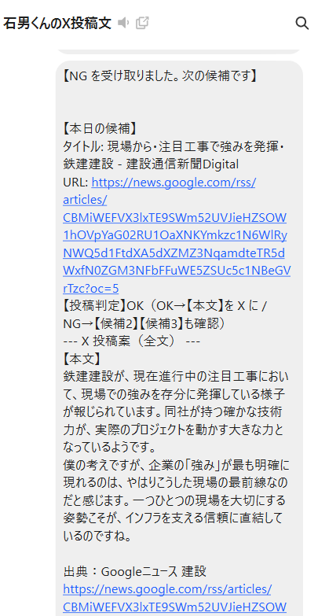

ニュース収集から文案生成、LINE 配信までをつなぎ、編集の「最初の一手」を毎日自動で届ける構成です。進捗用ダッシュボード（Linear 起点）は別パイプラインとして動きます。
朝ニュースは外部の情報（業界ニュース・投稿ネタ・文案のたたき）を届けるもの。進捗ダッシュボードは内部の制作工程（企画・原稿・動画などが Linear 上でどこまで進んだか）を把握するものです。
毎朝 LINE でネタが来ても、納期や担当の詰まりは別問題なので、ダッシュボードが無意味になるわけではありません（1 人運用で Linear をほぼ使わない場合は、ダッシュボードより朝ニュースが主役になりやすい、という整理だけはあります）。
GitHub Actions の cron（例: JST 朝に相当する UTC）で workflow 起動
RSS / 設定 YAML、重複排除、複数記事ピック
Gemini で「石男くん風」X 文案・出典ラベル整理
LINE Messaging API でプッシュ（分割テキスト）
返信が NG のとき再フェッチ・再プッシュ（署名検証）
フロー図の補足として、実際のトーク画面があると「人が最後に OK / NG する」イメージが伝わりやすくなります。投影時はスマホの縦スクショなので、スライドに貼るよりこのページを拡大表示するか、画像だけ切り出して使うと見やすいです。

イシュー取得・フィルタ
集計スクリプト
Gemini コメント生成
ダッシュボード生成・公開（例: Surge）
| サービス | できること（このプロジェクト内） |
|---|---|
| GitHub / Actions | リポジトリにスクリプトと設定を置き、cron または手動で朝ニュース処理を実行。Secrets に API キーや LINE トークンを保存。 |
| Google Gemini API | 記事要約・文体指定の X 文案生成、ダッシュボード用の短い提案文など。 |
| LINE Messaging API | ユーザー ID 宛てプッシュ、Webhook で返信イベント受信（NG 時の再実行トリガー）。 |
| RSS / ニュース設定 | YAML でソースやピック数を管理し、取得結果を JSON に残して追跡可能にする。 |
| トンネル（例: ngrok） | ローカルの Webhook サーバーを LINE が叩ける公開 URL に繋ぐ（開発・検証用）。 |
| 静的ホスティング（例: Surge） | 生成した dashboard.html を URL で共有（進捗ダッシュボード側）。 |
設定（ソース・プロンプト・ピック数）をコードと同じリポジトリでバージョン管理し、誰が見ても「何をどう生成しているか」追えるようにした。
出典表示を集約サイト名に偏らせず、一次媒体に寄せるプロンプトと後処理で、読者に伝わるラベルに寄せた。
LINE は長文を複数メッセージに分割し、Webhook 側は署名検証・ユーザー ID 一致・デバウンスで、誤爆と連打を抑えた。
Windows と CI の両方で同じスクリプトが動くよう、エントリポイント判定やパス・改行まわりを揃えた。
外部 API の認証エラー（キーの不足・改行混入・プレースホルダのまま）はログがなければ原因が見えにくい。Linear / Gemini / LINE それぞれで「期待するキーの形」を README とコードで一致させる必要があった。
LINE の Webhook は POST が本体で、トンネル URL の更新やチャネル設定の取り違いが起きやすい。応答メッセージのオンオフも挙動に効く。
GitHub Actions の cron は UTC 基準で、実際の実行時刻は遅延しうる。JST の「毎朝◯時」とはズレる前提で設計した。
いま無料枠・無料プランの組み合わせで成立させている範囲と、課金すると現実的に伸ばせる方向を整理した。
| 領域 | 無料（または低コスト）でできること | 有料化・課金でできること（例） |
|---|---|---|
| 生成 AI（Gemini） | 無料枠内のトークンで文案・短い要約。開発・小規模配信に十分なことが多い。 | 従量・上位モデルで長文・高精度・高頻度。レート制限解除に近い安定運用。 |
| LINE | 開発者向けチャネルや無料メッセージ枠内でのプッシュ・Webhook 検証。 | 公式アカウントのプランアップで配信上限・オプション機能（リッチメニュー等）が拡張。 |
| 実行基盤（GitHub） | 公開リポジトリなら Actions の無料分で定時実行。Secrets で鍵管理。 | プライベート repo・大規模 runner・長時間ジョブはプラン次第で有料・クォータ増。 |
| 公開 URL（Webhook） | ngrok 無料で一時 URL（再起動で変わりやすい）。 | 固定ドメイン・予約サブドメイン、チーム機能などはプロバイダの有料枠。 |
| 常駐サーバー | ローカル PC + トンネルで検証。 | VPS / PaaS / Cloud Run 等に常駐させ、トンネルなしで Webhook を安定運用。 |
| X（Twitter）への自動投稿 | 手動コピペ前提なら API 不要。 | X API の有料プラン・ビジネス要件に応じて自動ポスト・メトリクス取得が可能。 |
| ダッシュボード公開 | Surge 等の無料〜低額ホスティングで静的配信。 | 独自ドメイン・チーム・ステージングの使い分けはプランで拡張。 |
「入力（RSS・設定）」「処理（選定・プロンプト）」「出力（LINE・JSON ログ）」の三段で説明し、障害時は「どの段でログが止まったか」を見せると理解が早い。